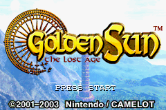

Golden Sun: The Lost Age

Complete on 2022-2-7
4 / 5
Release Date: Apr 14, 2003
Meta Score: 86
Screenshots

Notes
Took me way too long as it's a long JRPG I was determined never to give up on.
Shares many of the strengths of Golden Sun 1. Main criticisms are that the cutscenes can go on for too long and battles are a touch easy. Exploration and puzzles remain good.
Interesting that the plot ends up being a kind of "comedy of errors" where everyone is either trying to save the world or do what they think is right, and conflict comes from misunderstanding motives. The closest thing to a main villain is Alex, the only character acting for selfish reasons, and he never really takes center stage as a bad guy with his plot resolved in the epilogue.